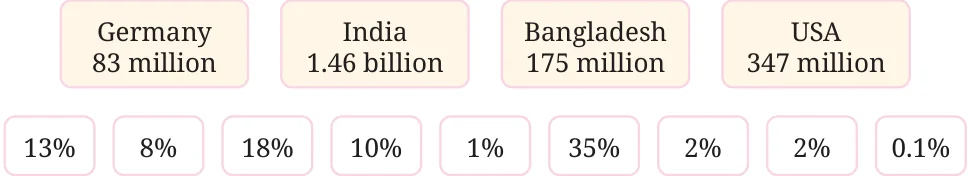
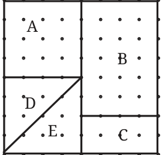
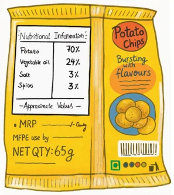
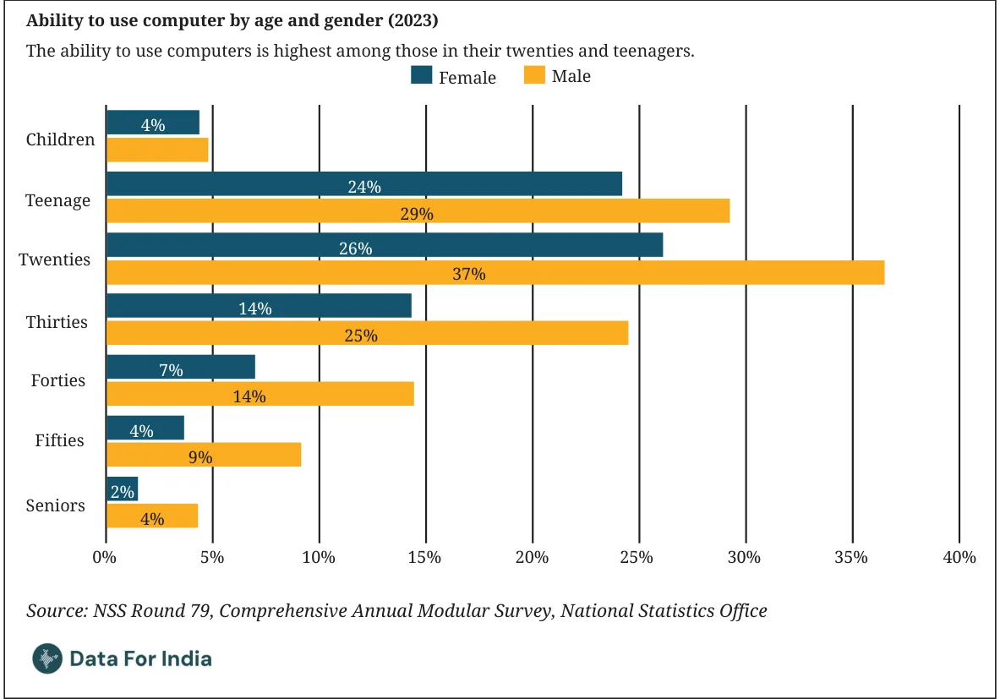

<!DOCTYPE html>
<html lang="en">
<head>
<meta charset="UTF-8">
<meta name="viewport" content="width=device-width,initial-scale=1">
<title>Figure it Out — Fractions in Disguise</title>
<meta name="description" content="Class 8 Mathematics · Part 2 · Fractions in Disguise · Figure it Out">
<link rel="icon" href="data:image/svg+xml,<svg xmlns='http://www.w3.org/2000/svg' viewBox='0 0 100 100'><text y='.9em' font-size='90'>📘</text></svg>">
<link rel="stylesheet" href="../../../assets/book.css">
<link rel="stylesheet" href="https://cdn.jsdelivr.net/npm/katex@0.16.11/dist/katex.min.css" crossorigin="anonymous">
</head>
<body>
<header class="topbar">
<div class="topbar-in">
  <div class="crumb">
    <span class="c1"><a href="../../../index.html">Library</a> · <a href="../../index.html">Class 8 Mathematics · Part 2</a></span>
    <span class="c2">Fractions in Disguise · Figure it Out</span>
  </div>
  <a class="tb-btn" data-nav="prev" href="../../01-fractions-in-disguise/16-tricky-percentages/index.html" title="Tricky Percentages">←</a>
  <details class="drawer"><summary class="tb-btn" title="Sections in this chapter">☰</summary>
<div class="drawer-panel"><div class="dh">Fractions in Disguise</div><a href="../01-fractions-as-percentages-1.1/index.html">1.1 Fractions as Percentages</a><a href="../02-expressing-fractions-as-percentages/index.html">Expressing Fractions as Percentages</a><a href="../03-figure-it-out/index.html">Figure it Out</a><a href="../04-percentage-of-some-quantity-1.2/index.html">1.2 Percentage of Some Quantity</a><a href="../05-free-hand-computations/index.html">Free-hand Computations</a><a href="../06-the-fdp-trio-fractions-decimals-and-percentages/index.html">The FDP Trio — Fractions, Decimals, and Percentages</a><a href="../07-percentages-greater-than-100/index.html">Percentages Greater than 100</a><a href="../08-figure-it-out/index.html">Figure it Out</a><a href="../09-using-percentages-1.3/index.html">1.3 Using Percentages; To Compare Proportions</a><a href="../10-percentage-increase-or-decrease/index.html">Percentage Increase or Decrease</a><a href="../11-taxes/index.html">Taxes</a><a href="../12-figure-it-out/index.html">Figure it Out</a><a href="../13-growth-and-compounding/index.html">Growth and Compounding</a><a href="../14-figure-it-out/index.html">Figure it Out</a><a href="../15-figure-it-out/index.html">Figure it Out</a><a href="../16-tricky-percentages/index.html">Tricky Percentages</a><a href="../17-figure-it-out/index.html" aria-current="page">Figure it Out</a><a href="../18-summary/index.html">SUMMARY</a></div></details>
  <a class="tb-btn" data-nav="next" href="../../01-fractions-in-disguise/18-summary/index.html" title="SUMMARY">→</a>
  <button class="tb-btn" data-theme-toggle title="Toggle light / dark" aria-label="Toggle light or dark theme">◐</button>
</div>
<div class="progress"><span style="width:16.2%"></span></div>
</header>
<main class="wrap">
<div class="sec-head">
  <p class="eyebrow"><a href="../index.html">Chapter 1 · Fractions in Disguise</a></p>
  <h1>Figure it Out</h1>
  <p class="sec-meta">Textbook pages 28–30 · 12 figures</p>
</div>
<article class="prose">
<ul class="qlist">
<li><span class="mk">1.</span><span class="lt">The population of Bengaluru in 2025 is about 250% of its population</span></li>
</ul>
<p>in 2000. If the population in 2000 was 50 lakhs, what is the population in 2025?</p>
<ul class="qlist">
<li><span class="mk">2.</span><span class="lt">The population of the world in 2025 is about 8.2 billion. The</span></li>
</ul>
<p>populations of some countries in 2025 are given. Match them with their approximate percentage share of the worldwide population. [Hint: Writing these numbers in the standard form and estimating can help].</p>
<figure class="fig wide"></figure>
<ul class="qlist">
<li><span class="mk">3.</span><span class="lt">The price of a mobile phone is ₹8,250. A GST of 18% is added to</span></li>
</ul>
<p>the price. Which of the following gives the final price of the phone including the GST?</p>
<ul class="qlist">
<li><span class="mk">(i)</span><span class="lt">\(8250 + 18\) (ii) \(8250 + 1800\)</span></li>
<li><span class="mk">(iii)</span><span class="lt">\(8250 + \frac{18}{100}\) (iv) \(8250 \times 18\)</span></li>
<li><span class="mk">(v)</span><span class="lt">\(8250 \times 1.18\) (vi) \(8250 + 8250 \times 0.18\)</span></li>
<li><span class="mk">(vii)</span><span class="lt">\(1.8 \times 8250\)</span></li>
<li><span class="mk">4.</span><span class="lt">The monthly percentage change in population (compared to the</span></li>
</ul>
<p>previous month) of mice in a lab is given: Month 1 change was +5%, Month 2 change was \(- 2%\), and Month 3 change was \(- 3%\). Which of the following statement(s) are true? The initial population is p .</p>
<ul class="qlist">
<li><span class="mk">(i)</span><span class="lt">The population after three months was \(p \times 0.05 \times 0.02 \times 0.03\).</span></li>
<li><span class="mk">(ii)</span><span class="lt">The population after three months was \(p \times 1.05 \times 0.98 \times 0.97\).</span></li>
<li><span class="mk">(iii)</span><span class="lt">The population after three months was \(p + 0.05 - 0.02 - 0.03\).</span></li>
<li><span class="mk">(iv)</span><span class="lt">The population after three months was p.</span></li>
<li><span class="mk">(v)</span><span class="lt">The population after three months was more than p.</span></li>
<li><span class="mk">(vi)</span><span class="lt">The population after three months was less than p.</span></li>
<li><span class="mk">5.</span><span class="lt">A shopkeeper initially set the price of a product with a 35% profit</span></li>
</ul>
<p>margin. Due to poor sales, he decided to offer a 30% discount on the selling price. Will he make a profit or a loss? Give reasons for your answer.</p>
<ul class="qlist">
<li><span class="mk">6.</span><span class="lt">What percentage of area is occupied by the region marked ‘E’ in the</span></li>
</ul>
<p>figure?</p>
<figure class="fig wide"></figure>
<figure class="fig wide"></figure>
<ul class="qlist">
<li><span class="mk">7.</span><span class="lt">What is 5% of 40? What is 40% of 5?</span></li>
</ul>
<figure class="fig side-fig"></figure>
<p>What is 25% of 12? What is 12% of 25? What is 15% of 60? What is 60% of 15? What do you notice? Can you make a general statement and justify it using algebra, comparing x% of y and y% of x?</p>
<ul class="qlist">
<li><span class="mk">8.</span><span class="lt">A school is organising an excursion for</span></li>
</ul>
<p>its students. 40% of them are Grade 8 students and the rest are Grade 9 students. Among these Grade 8 students, 60% are girls. [Hint: Drawing a rough diagram can help].</p>
<ul class="qlist">
<li><span class="mk">(i)</span><span class="lt">What percentage of the students going to the excursion are</span></li>
</ul>
<p>Grade 8 girls?</p>
<ul class="qlist">
<li><span class="mk">(ii)</span><span class="lt">If the total number of students going to the excursion is 160,</span></li>
</ul>
<p>how many of them are Grade 8 girls?</p>
<ul class="qlist">
<li><span class="mk">9.</span><span class="lt">A shopkeeper sells pencils at a price such that the selling price</span></li>
</ul>
<figure class="fig side-fig"></figure>
<p>of 3 pencils is equal to the cost of 5 pencils. Does he make a profit or a loss? What is his profit or loss percentage?</p>
<ul class="qlist">
<li><span class="mk">10.</span><span class="lt">The bus fares were increased by 3% last year and by 4% this year.</span></li>
</ul>
<p>What is the overall percentage price increase in the last 2 years?</p>
<ul class="qlist">
<li><span class="mk">11.</span><span class="lt">If the length of a rectangle is increased by 10% and the area is</span></li>
</ul>
<p>unchanged, by what percentage (exactly) does the breadth decrease by?</p>
<ul class="qlist">
<li><span class="mk">12.</span><span class="lt">The percentage of ingredients in a 65 g chips</span></li>
</ul>
<figure class="fig side-fig"></figure>
<p>packet is shown in the picture. Find out the weight each ingredient makes up in this packet.</p>
<ul class="qlist">
<li><span class="mk">13.</span><span class="lt">Three shops sell the same items at the same</span></li>
</ul>
<p>price. The shops offer deals as follows: Shop A: “Buy 1 and get 1 free” Shop B: “Buy 2 and get 1 free” Shop C: “Buy 3 and get 1 free” Answer the following:</p>
<ul class="qlist">
<li><span class="mk">(i)</span><span class="lt">If the price of one item is ₹100, what is the effective price per</span></li>
</ul>
<p>item in each shop? Arrange the shops from cheapest to costliest.</p>
<ul class="qlist">
<li><span class="mk">(ii)</span><span class="lt">For each shop, calculate the percentage discount on the items.</span></li>
</ul>
<p>[Hint: Compare the free items to the total items you receive.]</p>
<ul class="qlist">
<li><span class="mk">(iii)</span><span class="lt">Suppose you need 4 items. Which shop would you choose? Why?</span></li>
</ul>
<figure class="fig wide"></figure>
<figure class="fig wide"></figure>
<ul class="qlist">
<li><span class="mk">14.</span><span class="lt">In a room of 100 people, 99% are left-handed. How many</span></li>
</ul>
<figure class="fig side-fig"></figure>
<p>left-handed people have to leave the room to bring that percentage down to 98%?</p>
<ul class="qlist">
<li><span class="mk">15.</span><span class="lt">Look at the following graph.</span></li>
</ul>
<figure class="fig table-fig wide"></figure>
<p>Based on the graph, which of the following statement(s) are valid?</p>
<ul class="qlist">
<li><span class="mk">(i)</span><span class="lt">People in their twenties are the most computer-literate among</span></li>
</ul>
<p>all age groups.</p>
<ul class="qlist">
<li><span class="mk">(ii)</span><span class="lt">Women lag behind in the ability to use computers across age</span></li>
</ul>
<p>groups.</p>
<ul class="qlist">
<li><span class="mk">(iii)</span><span class="lt">There are more people in their twenties than teenagers.</span></li>
<li><span class="mk">(iv)</span><span class="lt">More than a quarter of people in their thirties can use computers.</span></li>
<li><span class="mk">(v)</span><span class="lt">Less than 1 in 10 aged 60 and above can use computers.</span></li>
<li><span class="mk">(vi)</span><span class="lt">Half of the people in their twenties can use computers.</span></li>
</ul>
<figure class="fig wide"></figure>
</article>
<nav class="pager"><a class="" data-nav="prev" href="../../01-fractions-in-disguise/16-tricky-percentages/index.html"><span class="dir">← Previous</span><span class="t">Tricky Percentages</span><span class="ch">Fractions in Disguise</span></a><a class="nx" data-nav="next" href="../../01-fractions-in-disguise/18-summary/index.html"><span class="dir">Next →</span><span class="t">SUMMARY</span><span class="ch">Fractions in Disguise</span></a></nav>
</main><footer class="site">Generated from the source textbook PDFs · text, figures and exercises belong to their respective publishers.</footer><script defer src="https://cdn.jsdelivr.net/npm/katex@0.16.11/dist/katex.min.js" crossorigin="anonymous"></script>
<script defer src="https://cdn.jsdelivr.net/npm/katex@0.16.11/dist/contrib/auto-render.min.js" crossorigin="anonymous"
  onload="renderMathInElement(document.body,{delimiters:[
    {left:'\\(',right:'\\)',display:false},
    {left:'$$',right:'$$',display:true},
    {left:'\\[',right:'\\]',display:true}],throwOnError:false,ignoredTags:['script','noscript','style','textarea','pre','code']})"></script>
<script src="../../../assets/book.js"></script>
<script defer src="../../../../assets/search.js?v=1789782769"></script>
<script defer src="../../../../assets/screenshot.js?v=1789782769"></script>
</body>
</html>
